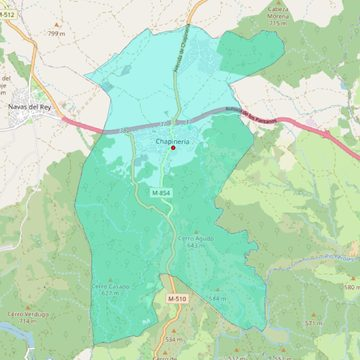

Concepción de Nuestra Señora
- Arciprestazgo
- San Martín de Valdeiglesias
- Población
- Chapinería
- Dirección postal
- Pza. del Palacio, 5
- Código postal
- 28694
- Extensión
- 25,65 km² (2.565 ha)
- Teléfono
- 918 941 105
- Correo electrónico
- concepcionns-chapineria@diocesisgetafe.es
- Información demográfica
- De la parroquia · De la población (Chapinería) · Del arciprestazgo (San Martín de Valdeiglesias)
- Resumen para imprimir
- La parroquia en una hoja (A4)


Descargar mapaLímites según decreto
Los del término municipal
¿Algún dato de esta parroquia es incorrecto o ha cambiado? Comuníquenoslo.